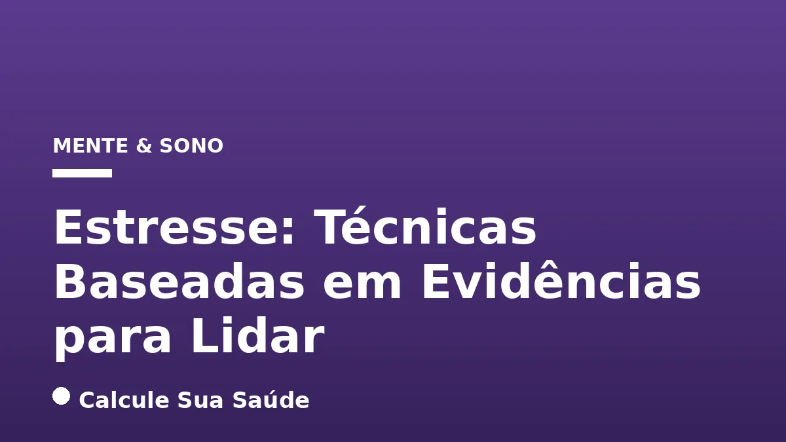

Aviso médico importante
Este conteúdo é educativo e informativo e não substitui a consulta, o diagnóstico ou o tratamento de um profissional de saúde. Em caso de sintomas, procure orientação médica.
Índice do Artigo
- 1. O Que É Estresse? Desvendando a Resposta de Luta ou Fuga
- 2. Causas e Fatores de Risco: O Que Desencadeia o Estresse?
- 3. Sintomas do Estresse: Como o Corpo e a Mente Reagem
- 4. Diagnóstico do Estresse: Quando Procurar Ajuda Profissional
- 5. Estratégias de Prevenção e Manejo Geral do Estresse
- 6. Atividade Física: Um Poderoso Aliado Contra o Estresse
- 7. Alimentação Saudável: Nutrição para a Mente e o Corpo Estressados
- 8. Meditação e Mindfulness: Cultivando a Atenção Plena
- 9. Técnicas de Relaxamento: Restaurando o Equilíbrio do Corpo e da Mente
- 10. Terapia Cognitivo-Comportamental (TCC) e Aconselhamento
- 11. Musicoterapia e Arteterapia: Expressão Criativa para o Alívio do Estresse
- 12. Emotional Freedom Techniques (EFT): A Terapia de Toque e Liberação
- 13. Mitos Comuns vs. O Que a Ciência Diz Sobre o Estresse
- 14. A Importância do Sono de Qualidade no Combate ao Estresse
- 15. A Importância do Apoio Social e Conexão Humana
- 16. Dados Epidemiológicos do Brasil: Um Cenário Preocupante
- 17. Quando Buscar Ajuda Profissional para o Estresse
- 18. Construindo Resiliência: O Caminho para uma Vida Equilibrada
- 19. Perguntas frequentes
O estresse é uma resposta inata e complexa do organismo a demandas e desafios, sejam eles físicos, mentais ou emocionais. Embora seja uma parte inevitável da experiência humana e, em doses moderadas, possa até impulsionar o crescimento e a resiliência, sua manifestação crônica representa uma ameaça significativa à saúde e ao bem-estar. No Brasil, os dados epidemiológicos são alarmantes, com uma parcela considerável da população relatando altos níveis de estresse e seus impactos negativos na vida diária.
Compreender o estresse, suas causas e sintomas é o primeiro passo para um manejo eficaz. No entanto, a verdadeira chave para uma vida mais equilibrada reside na aplicação de técnicas e estratégias que possuem respaldo científico. Este artigo, elaborado pelo Calcule Sua Saúde, mergulha profundamente nas abordagens baseadas em evidências que podem ajudar indivíduos a não apenas lidar com o estresse, mas a prosperar apesar dele.
Nosso objetivo é fornecer informações precisas e acionáveis, fundamentadas em pesquisas e recomendações de instituições de saúde renomadas, para que você possa construir um arsenal de ferramentas eficazes contra o estresse, promovendo uma melhor qualidade de vida e protegendo sua saúde a longo prazo.
Em resumo
- O estresse é uma resposta fisiológica e psicológica normal, mas o estresse crônico é prejudicial à saúde.
- Sintomas de estresse podem ser físicos, psicológicos, emocionais e comportamentais, variando em intensidade.
- O diagnóstico é clínico, baseado na avaliação dos sintomas e seu impacto na vida diária.
- Atividade física regular, alimentação saudável e técnicas de relaxamento são pilares no manejo do estresse.
- Mindfulness, Terapia Cognitivo-Comportamental (TCC) e EFT são abordagens com forte respaldo científico.
- É crucial desmistificar o estresse e buscar apoio profissional quando necessário para evitar complicações.
1. O Que É Estresse? Desvendando a Resposta de Luta ou Fuga
O estresse é, em sua essência, uma resposta automática e adaptativa do corpo e da mente a estímulos que exigem uma reação rápida e imediata, conhecidos como agentes estressores. Essa reação fisiológica e psicológica prepara o organismo para enfrentar ou fugir de uma ameaça percebida, um mecanismo evolutivo fundamental para a sobrevivência da espécie humana. A Organização Mundial da Saúde (OMS) define o estresse como qualquer alteração que cause desgaste físico, emocional ou psicológico.
A resposta ao estresse envolve a ativação do sistema nervoso simpático, resultando na liberação de hormônios como a adrenalina e o cortisol. Esses hormônios aumentam a frequência cardíaca, a pressão arterial e a disponibilidade de energia, preparando o corpo para a ação. No entanto, se essa ativação for mantida por períodos prolongados sem a devida recuperação, o estresse pode se tornar crônico, com um alto custo para a saúde do indivíduo. Para entender mais sobre o impacto do cortisol, veja nosso artigo sobre Cortisol e Estresse Crônico: Neurobiologia.
As Três Fases do Estresse
O estresse pode ser didaticamente dividido em três fases distintas, conforme descrito por Hans Selye em sua Síndrome de Adaptação Geral:
- Fase de Alerta: É o primeiro contato com o agente estressor. O corpo reage imediatamente, ativando o cérebro e liberando os hormônios do estresse, preparando-se para a luta ou fuga.
- Fase de Resistência: O organismo tenta se adaptar ao estressor, buscando retornar ao equilíbrio. O corpo mobiliza recursos para lidar com a demanda contínua, tentando normalizar suas funções enquanto ainda está sob pressão.
- Fase de Exaustão: Se o estressor persiste e o corpo não consegue mais se adaptar, os recursos se esgotam. Nesta fase, podem surgir diversos comprometimentos físicos e psicológicos, manifestando-se em forma de doenças e esgotamento.
2. Causas e Fatores de Risco: O Que Desencadeia o Estresse?
O estresse pode ser desencadeado por uma vasta gama de fatores, que podem ser classificados como externos ou internos. A compreensão desses gatilhos é fundamental para o desenvolvimento de estratégias eficazes de manejo.
Fatores Externos
Os fatores externos são aqueles que vêm do ambiente e das interações sociais. Eles incluem:
- Acontecimentos Diários Menores: Trânsito intenso, poluição sonora, pequenos contratempos.
- Pressões no Trabalho: Sobrecarga de tarefas, prazos apertados, ambiente de trabalho tóxico e a Síndrome de Burnout.
- Problemas Financeiros: Dificuldades para pagar contas, dívidas, instabilidade econômica.
- Dificuldades Acadêmicas ou Escolares: Pressão por desempenho, exames, bullying.
- Problemas de Relacionamento: Conflitos familiares, com amigos ou parceiros, divórcio, luto.
- Eventos de Vida Significativos: Casamento, compra de casa, nascimento de um filho, aposentadoria, doenças crônicas.
- Traumas Físicos ou Emocionais: Acidentes, violência, situações de grande impacto psicológico.
- Bullying ou Discriminação: Experiências de exclusão ou tratamento injusto.
Fatores Internos
Os fatores internos são aqueles que se originam dentro do próprio indivíduo, muitas vezes relacionados a padrões de pensamento, traços de personalidade e percepções. Incluem:
- Preocupações Excessivas: Ruminação constante sobre problemas ou eventos futuros.
- Pensamentos Pessimistas: Uma visão negativa generalizada da vida e das situações.
- Traços de Personalidade: Perfeccionismo, desconfiança, pessimismo, ou uma sensação de impotência e falta de controle sobre a própria vida.
- Exigência Pessoal Elevada: Metas irrealistas e autocrítica severa.
3. Sintomas do Estresse: Como o Corpo e a Mente Reagem
Os sintomas do estresse são variados e podem se manifestar em diferentes níveis – físico, psicológico, emocional e comportamental. A intensidade e a combinação desses sintomas variam de pessoa para pessoa, e reconhecê-los é crucial para buscar ajuda e implementar estratégias de manejo. A persistência de vários desses sintomas pode indicar a necessidade de avaliação profissional.
Sintomas Físicos
O corpo reage ao estresse de maneiras que muitas vezes são visíveis ou perceptíveis:
- Queda de cabelo em excesso
- Dores de cabeça frequentes
- Fadiga e cansaço excessivo
- Tensão muscular e dores no corpo
- Imunidade baixa e maior suscetibilidade a alergias e infecções
- Alterações gastrointestinais (dor, inchaço, náuseas, vômitos, diarreia ou constipação, alteração do apetite)
- Aumento dos batimentos cardíacos (taquicardia) e respiração acelerada
- Mãos frias e suadas, formigamentos
- Alterações na pele (erupções, acne)
- Tontura
- Insônia e dificuldade para dormir
- Aumento da pressão arterial
- Boca seca
- Agitação
Sintomas Psicológicos, Emocionais e Comportamentais
O estresse também afeta profundamente a mente e o comportamento:
- Ansiedade, angústia, nervosismo ou preocupação em excesso (muitas vezes confundido com ansiedade ou transtornos de ansiedade)
- Problemas de memória e dificuldade de concentração
- Sensação de perda de controle
- Alterações de humor, irritabilidade excessiva
- Desinteresse pelas atividades, apatia
- Perda de libido e dificuldades sexuais
- Esgotamento mental
- Desânimo, sensação de fracasso e insegurança
- Negatividade constante, isolamento social
- Sentimentos de derrota e desesperança
- Procrastinação em tarefas importantes
É importante notar que a presença de alguns desses sintomas pode ser normal em momentos de maior pressão. No entanto, a persistência e a intensidade que comprometem a qualidade de vida e o funcionamento diário indicam que o estresse pode ter se tornado crônico e requer atenção.
4. Diagnóstico do Estresse: Quando Procurar Ajuda Profissional
O diagnóstico do estresse é essencialmente clínico e é realizado por um profissional de saúde qualificado, como um psiquiatra, psicólogo ou médico de família. Não existe um exame laboratorial único que confirme o estresse, mas a avaliação cuidadosa dos sintomas e seu impacto na vida do indivíduo é a base para o diagnóstico.
Durante a consulta, o profissional irá:
- Avaliar os Sintomas: Questionar sobre a natureza, frequência e intensidade dos sintomas físicos, psicológicos, emocionais e comportamentais relatados.
- Analisar o Início e Duração: Entender quando os sintomas começaram e por quanto tempo persistem.
- Investigar o Impacto na Vida Diária: Avaliar como o estresse afeta o trabalho, relacionamentos, sono, lazer e outras áreas da vida.
- Revisar o Histórico de Saúde: Considerar doenças preexistentes, uso de medicamentos e histórico familiar de condições de saúde mental.
Em alguns casos, o médico pode solicitar exames laboratoriais, como a medição dos níveis de cortisol ou um eletrocardiograma, mas isso geralmente ocorre para descartar outras condições médicas que possam estar causando sintomas semelhantes ao estresse, e não para confirmar o diagnóstico de estresse em si. Por exemplo, alterações na tireoide podem mimetizar sintomas de ansiedade e estresse. A principal ferramenta diagnóstica permanece sendo a anamnese detalhada e a observação clínica.
É fundamental procurar ajuda profissional quando os sintomas de estresse se tornam persistentes, intensos, ou quando começam a interferir significativamente na sua capacidade de funcionar no dia a dia. Um profissional pode oferecer um diagnóstico preciso e orientar o tratamento mais adequado, que pode incluir terapias, mudanças no estilo de vida ou, em alguns casos, medicação.
5. Estratégias de Prevenção e Manejo Geral do Estresse
A gestão do estresse é um componente crucial para a manutenção da saúde e do bem-estar a longo prazo. Além das técnicas específicas baseadas em evidências, existem estratégias gerais de prevenção e manejo que servem como pilares para uma vida menos estressante.
Identificar e Gerenciar Gatilhos
O primeiro passo para o manejo eficaz do estresse é reconhecer o que o desencadeia. Identificar os agentes estressores – sejam eles pessoas, situações, pensamentos ou ambientes – permite que você desenvolva estratégias para evitá-los, minimizá-los ou mudar sua resposta a eles. Manter um diário de estresse pode ser útil para mapear padrões e gatilhos.
Evitar Excessos
Certos hábitos podem exacerbar o estresse. Reduzir ou eliminar o consumo de tabaco, álcool e cafeína é uma medida importante. Embora possam parecer oferecer um alívio temporário, essas substâncias podem, na verdade, aumentar a ansiedade e desregular o sono, perpetuando o ciclo do estresse. O álcool, por exemplo, estimula a liberação de cortisol, o hormônio do estresse, podendo “alimentar” o estresse em vez de aliviá-lo.
Organizar o Tempo e Estabelecer Prioridades
A sensação de estar sobrecarregado é um grande contribuinte para o estresse. Aprender a organizar o tempo, estabelecer prioridades realistas e delegar tarefas quando possível pode reduzir significativamente essa pressão. Técnicas de gestão de tempo, como a Matriz de Eisenhower (urgente/importante), podem ser muito úteis.
Equilibrar Trabalho e Lazer
Em um mundo cada vez mais conectado, a linha entre trabalho e vida pessoal pode se tornar tênue. É vital reservar tempo para atividades prazerosas, hobbies e relaxamento. Desconectar-se do trabalho e dedicar-se a momentos de lazer é essencial para recarregar as energias e manter o equilíbrio emocional.
Conectar-se com Outras Pessoas
O isolamento social pode agravar o estresse. Buscar apoio de amigos, familiares ou grupos de apoio é uma estratégia poderosa. Compartilhar preocupações e sentimentos com pessoas de confiança pode oferecer novas perspectivas e um senso de pertencimento, reduzindo a sensação de solidão e sobrecarga.
Focar no Que Pode Ser Controlado
Muitas situações estressantes estão fora do nosso controle. Aprender a diferenciar o que pode ser influenciado do que não pode é uma habilidade valiosa. Concentre sua energia nos aspectos da situação que você pode mudar e pratique a aceitação em relação ao restante. Isso não significa passividade, mas sim uma gestão inteligente da sua energia mental e emocional.
6. Atividade Física: Um Poderoso Aliado Contra o Estresse
A atividade física é amplamente reconhecida como uma das estratégias mais eficazes e acessíveis para aliviar o estresse. Quase qualquer forma de exercício pode atuar como um poderoso redutor de estresse, oferecendo benefícios tanto físicos quanto psicológicos, com forte nível de evidência científica, respaldado por instituições como a Mayo Clinic.
Mecanismos de Ação
O exercício físico regular desencadeia uma série de reações bioquímicas e fisiológicas no corpo que contribuem para a redução do estresse:
- Liberação de Endorfinas: Conhecidas como os "hormônios da felicidade", as endorfinas são neurotransmissores que produzem uma sensação de euforia e bem-estar, atuando como analgésicos naturais e elevadores de humor.
- Redução dos Hormônios do Estresse: A atividade física ajuda a diminuir os níveis de hormônios do estresse, como o cortisol e a adrenalina, que são elevados em situações de tensão crônica.
- Melhora do Humor: Além das endorfinas, o exercício estimula a produção de outros neurotransmissores, como a serotonina e a dopamina, que desempenham um papel crucial na regulação do humor e na redução dos sintomas de depressão e ansiedade.
- Distração e Foco: O exercício oferece uma pausa mental das preocupações diárias, permitindo que a mente se concentre na atividade presente, o que pode ser uma forma de mindfulness em movimento.
- Melhora da Qualidade do Sono: A atividade física regular contribui para um sono mais profundo e reparador, essencial para a recuperação do corpo e da mente e para o manejo do estresse.
- Aumento da Resiliência: Ao fortalecer o corpo, o exercício também pode aumentar a capacidade do indivíduo de lidar com desafios futuros, construindo resiliência física e mental.
Recomendações Práticas
Para colher os benefícios da atividade física no combate ao estresse, recomenda-se pelo menos 30 minutos de exercício de intensidade moderada na maioria dos dias da semana. No entanto, mesmo pequenas doses podem fazer a diferença: uma caminhada de apenas 21 minutos já pode promover calma, foco e disposição.
Não é necessário se dedicar a atividades extenuantes. Escolha algo que você goste e que se encaixe na sua rotina. Pode ser:
- Caminhada ou corrida
- Natação
- Ciclismo
- Dança
- Yoga ou Tai Chi (que também são técnicas de relaxamento)
- Esportes coletivos
- Musculação
A chave é a regularidade e a consistência. Integrar a atividade física na sua rotina diária é um investimento poderoso na sua saúde mental e física, ajudando a construir uma barreira robusta contra os efeitos nocivos do estresse.
7. Alimentação Saudável: Nutrição para a Mente e o Corpo Estressados
A relação entre alimentação e estresse é bidirecional: o estresse pode influenciar nossos hábitos alimentares, e a dieta, por sua vez, pode afetar nossa capacidade de lidar com o estresse. Uma dieta equilibrada e nutritiva é um pilar fundamental para o bem-estar geral e para fortalecer o corpo contra os impactos do estresse, com forte nível de evidência baseado em recomendações de saúde geral.
Como a Dieta Influencia o Estresse
O estresse crônico pode esgotar o corpo de nutrientes essenciais, como vitaminas do complexo B, vitamina C, vitamina E, magnésio e manganês. Esses nutrientes são cruciais para a função cerebral, a produção de neurotransmissores e a resposta antioxidante. A deficiência deles pode exacerbar os sintomas de estresse, fadiga e ansiedade.
Além disso, o estresse pode levar a escolhas alimentares inadequadas, como o consumo excessivo de alimentos ultraprocessados, ricos em açúcar, gorduras não saudáveis e sódio. Esses alimentos podem causar picos e quedas de açúcar no sangue, afetando o humor e a energia, e contribuindo para a inflamação sistêmica, que está ligada a transtornos de humor. Para saber mais sobre os riscos, consulte nosso artigo sobre Alimentos Ultraprocessados: Riscos e Identificação.
Recomendações para uma Dieta Anti-Estresse
Uma dieta saudável para o manejo do estresse deve ser rica em:
- Frutas e Vegetais: Fontes abundantes de vitaminas, minerais e antioxidantes que combatem o estresse oxidativo e apoiam a função imunológica.
- Grãos Integrais: Fornecem carboidratos complexos que ajudam a manter os níveis de açúcar no sangue estáveis, promovendo energia constante e um humor equilibrado.
- Proteínas Magras: Essenciais para a produção de neurotransmissores e para a manutenção da massa muscular.
- Gorduras Saudáveis: Presentes em peixes ricos em ômega-3, abacate, nozes e sementes, são importantes para a saúde cerebral e a redução da inflamação.
A Dieta Mediterrânea, por exemplo, é um excelente modelo de alimentação que promove a saúde geral e pode ser benéfica no manejo do estresse. Além disso, garantir uma ingestão adequada de fibras alimentares é crucial para a saúde intestinal, que tem uma forte conexão com a saúde mental.
É importante focar na reposição dos nutrientes que o estresse pode esgotar. Inclua alimentos ricos em:
- Magnésio: Vegetais de folhas verdes escuras, nozes, sementes, leguminosas.
- Vitaminas do Complexo B: Grãos integrais, carnes magras, ovos, laticínios, vegetais verdes.
- Vitamina C: Frutas cítricas, pimentões, brócolis.
- Vitamina E: Sementes, óleos vegetais, nozes.
Consultar um nutricionista pode ajudar a personalizar um plano alimentar que atenda às suas necessidades específicas e otimize sua capacidade de lidar com o estresse.
8. Meditação e Mindfulness: Cultivando a Atenção Plena
A meditação e o mindfulness (atenção plena) são técnicas milenares que ganharam forte respaldo científico como ferramentas eficazes para a redução do estresse e da ansiedade. Com um nível de evidência forte, comprovado por meta-análises e ensaios clínicos randomizados, essas práticas oferecem um caminho para a calma e o equilíbrio mental.
O Que É Mindfulness?
Mindfulness é a capacidade de prestar atenção ao momento presente, de forma intencional e sem julgamento. Envolve observar pensamentos, sentimentos e sensações corporais à medida que surgem, sem se apegar a eles ou reagir impulsivamente. Essa prática ajuda a criar uma distância saudável entre o indivíduo e seus pensamentos estressantes, permitindo uma resposta mais consciente em vez de reativa.
Programas de Redução de Estresse Baseados em Mindfulness (MBSR)
Desenvolvidos por Jon Kabat-Zinn, os programas de Redução de Estresse Baseados em Mindfulness (MBSR) são intervenções estruturadas que ensinam uma variedade de técnicas de mindfulness, incluindo:
- Meditação da Respiração: Focar na sensação da respiração para ancorar a atenção no presente.
- Técnicas de Escaneamento Corporal: Prestar atenção sistematicamente a diferentes partes do corpo, notando sensações sem julgamento.
- Exercícios Físicos Inspirados no Yoga: Movimentos suaves que combinam atenção plena com o corpo e a respiração.
Ensaios clínicos randomizados de intervenções MBSR demonstraram melhorias significativas em processos psicológicos e fisiológicos relacionados à saúde e ao manejo do estresse. Uma meta-análise de 2014, por exemplo, sugere evidências moderadas de que programas de meditação mindfulness melhoram a ansiedade e a depressão.
Benefícios da Meditação e Mindfulness
- Redução dos níveis de hormônios do estresse, como o cortisol.
- Diminuição da frequência cardíaca e da pressão arterial.
- Melhora da qualidade do sono.
- Aumento da capacidade de concentração e memória.
- Melhora da regulação emocional e redução da irritabilidade.
- Desenvolvimento de uma perspectiva mais positiva e resiliente diante dos desafios.
- Alívio dos sintomas de ansiedade e depressão.
A prática regular, mesmo que por poucos minutos ao dia, pode trazer benefícios substanciais. Existem diversos aplicativos e recursos online que podem guiar iniciantes na meditação e no mindfulness, tornando essas técnicas acessíveis a todos.
9. Técnicas de Relaxamento: Restaurando o Equilíbrio do Corpo e da Mente
As técnicas de relaxamento são um conjunto de práticas que visam diminuir a ativação do sistema nervoso simpático (responsável pela resposta de "luta ou fuga") e ativar o sistema nervoso parassimpático (responsável pelo "descanso e digestão"). Essas técnicas podem diminuir os efeitos do estresse na mente e no corpo, com níveis de evidência que variam de moderado a forte, dependendo da técnica específica.
Respiração Profunda (Diafragmática)
A respiração é uma das funções mais básicas e poderosas do corpo. A respiração profunda, ou diafragmática, é uma técnica simples, mas extremamente eficaz. Ao focar na respiração e inspirar profundamente pelo diafragma (barriga), você pode:
- Desacelerar a frequência cardíaca e respiratória.
- Reduzir a pressão arterial.
- Diminuir a atividade dos hormônios do estresse.
- Promover uma sensação imediata de calma.
Como praticar: Sente-se ou deite-se confortavelmente. Coloque uma mão no peito e outra na barriga. Inspire lentamente pelo nariz, sentindo a barriga se expandir. Expire lentamente pela boca, sentindo a barriga contrair. Repita por 5-10 minutos.
Relaxamento Muscular Progressivo (RMP)
Desenvolvido por Edmund Jacobson, o RMP envolve tensionar e relaxar diferentes grupos musculares do corpo, um de cada vez. Essa técnica ajuda a reconhecer a diferença entre tensão e relaxamento, permitindo que você libere a tensão muscular acumulada pelo estresse. Uma revisão sistemática de 2015 indicou que o RMP é promissor para reduzir a ansiedade e a depressão em adultos com mais de 60 anos.
Como praticar: Comece pelos pés, tensionando os músculos por 5 segundos e relaxando por 15-20 segundos. Progrida para as pernas, abdômen, braços, ombros, pescoço e rosto.
Tai Chi e Qigong
Essas antigas práticas chinesas combinam movimentos lentos e fluidos, respiração profunda e meditação. São formas de "meditação em movimento" que promovem a calma, o equilíbrio e a flexibilidade. Uma meta-análise e revisão sistemática de 2021 sugerem um potencial efeito benéfico na redução dos sintomas de ansiedade e depressão, e nos níveis de cortisol em adolescentes.
Biofeedback de Variabilidade da Frequência Cardíaca (VFC)
O biofeedback de VFC é uma técnica que ensina os indivíduos a controlar funções corporais involuntárias, como a frequência cardíaca, usando equipamentos eletrônicos que fornecem feedback em tempo real. Ao aprender a modular a VFC, é possível melhorar a regulação do sistema nervoso autônomo e reduzir o estresse. Uma meta-análise de 2017 mostrou que é útil para reduzir o estresse e a ansiedade autorrelatados.
Outras Técnicas
- Massagem: Ajuda a relaxar os músculos, melhorar a circulação e promover uma sensação de bem-estar.
- Yoga: Combina posturas físicas, exercícios de respiração e meditação, oferecendo benefícios semelhantes ao Tai Chi.
A escolha da técnica ideal pode depender da preferência pessoal e da disponibilidade. A prática regular é a chave para colher os benefícios a longo prazo.
10. Terapia Cognitivo-Comportamental (TCC) e Aconselhamento
A Terapia Cognitivo-Comportamental (TCC) é uma das abordagens psicoterapêuticas mais estudadas e com maior respaldo científico para o tratamento de uma vasta gama de condições psicológicas, incluindo o estresse, a ansiedade e a depressão. Considerada uma "Melhor Prática" em Terapia Baseada em Evidências (TBE), a TCC foca em identificar e modificar padrões de pensamento e comportamento disfuncionais que contribuem para o estresse.
Como a TCC Ajuda no Estresse
A TCC opera sob o princípio de que nossos pensamentos, sentimentos e comportamentos estão interligados. Ao mudar a forma como pensamos sobre as situações estressantes e como reagimos a elas, podemos alterar nossa experiência de estresse. Um terapeuta de TCC ajuda o indivíduo a:
- Identificar Pensamentos Distorcidos: Reconhecer padrões de pensamento negativos, catastróficos ou irracionais que exacerbam o estresse.
- Reestruturação Cognitiva: Aprender a desafiar e substituir esses pensamentos por outros mais realistas e adaptativos.
- Desenvolver Habilidades de Enfrentamento: Adquirir novas estratégias comportamentais para lidar com situações difíceis de forma mais eficaz.
- Exposição Gradual: Em casos de estresse relacionado a fobias ou traumas, a exposição gradual e controlada pode ajudar a dessensibilizar a resposta ao estressor.
Conversar com um terapeuta pode fornecer um espaço seguro para explorar as causas do estresse, desenvolver uma compreensão mais profunda de si mesmo e melhorar as habilidades de enfrentamento para situações difíceis.
Técnica de Inoculação de Estresse (TIE)
Uma abordagem psicoterapêutica baseada em evidências, desenvolvida por Donald Meichenbaum, a Técnica de Inoculação de Estresse (TIE) é um exemplo específico de intervenção que combina estratégias cognitivas, comportamentais e de relaxamento. A TIE visa preparar os indivíduos para enfrentar o estresse de forma gradual e controlada, reduzindo os sintomas de ansiedade e fortalecendo a resiliência. O processo geralmente envolve três fases:
- Fase Conceitualização: O paciente aprende sobre a natureza do estresse e como ele o afeta.
- Fase de Aquisição e Ensaio de Habilidades: O paciente aprende e pratica técnicas de relaxamento, reestruturação cognitiva e resolução de problemas.
- Fase de Aplicação e Consolidação: O paciente aplica as novas habilidades em situações estressantes simuladas ou reais, com o apoio do terapeuta.
A TCC e o aconselhamento são ferramentas poderosas que capacitam os indivíduos a mudar sua relação com o estresse, promovendo uma melhor saúde mental e um maior bem-estar.
11. Musicoterapia e Arteterapia: Expressão Criativa para o Alívio do Estresse
A expressão criativa, através da música e da arte, tem sido cada vez mais reconhecida como uma ferramenta terapêutica valiosa no manejo do estresse. Embora a musicoterapia tenha um nível de evidência mais robusto, a arteterapia também se mostra promissora, oferecendo caminhos não verbais para o processamento de emoções e a promoção do relaxamento.
Musicoterapia
A musicoterapia é o uso clínico e baseado em evidências da música para atingir objetivos individualizados dentro de um relacionamento terapêutico. Demonstrou reduzir consideravelmente o estresse, com estudos sugerindo um impacto significativo, por vezes maior do que a meditação e atividades físicas em alguns casos específicos. Os mecanismos pelos quais a musicoterapia atua incluem:
- Redução da Ativação Fisiológica: A música pode diminuir a frequência cardíaca, a pressão arterial e os níveis de cortisol.
- Regulação Emocional: Ajuda a processar e expressar emoções difíceis, proporcionando um senso de alívio.
- Distração e Foco: Desvia a atenção de pensamentos estressantes para a experiência musical.
- Estimulação de Neurotransmissores: Pode aumentar a liberação de dopamina, associada ao prazer e à recompensa.
- Conexão Social: Em ambientes de grupo, a musicoterapia pode promover a conexão e o apoio mútuo.
A musicoterapia pode envolver ouvir música, cantar, tocar instrumentos, compor ou improvisar. A escolha da atividade e do tipo de música é adaptada às necessidades e preferências do indivíduo.
Arteterapia
A arteterapia é uma forma de psicoterapia que utiliza o processo criativo da arte para melhorar o bem-estar físico, mental e emocional de uma pessoa. Embora com menos estudos que a musicoterapia, a arteterapia se mostra promissora no manejo do estresse ao:
- Facilitar a Expressão Não Verbal: Permite que indivíduos expressem sentimentos e pensamentos que podem ser difíceis de verbalizar.
- Promover o Relaxamento: O ato de criar arte pode ser meditativo e calmante.
- Aumentar a Autoconsciência: Ajuda a explorar emoções, resolver conflitos e melhorar a autoestima.
- Reduzir a Tensão: O foco na atividade artística pode desviar a atenção de preocupações estressantes.
A arteterapia não exige habilidades artísticas prévias; o foco está no processo criativo e na autoexploração, e não no produto final. Ambas as terapias oferecem abordagens complementares e holísticas para o manejo do estresse, aproveitando o poder da criatividade para a cura e o bem-estar.
12. Emotional Freedom Techniques (EFT): A Terapia de Toque e Liberação
As Emotional Freedom Techniques (EFT), ou Técnicas de Liberação Emocional, são uma abordagem terapêutica que combina elementos de terapias de exposição e cognitivas com a acupressão. Com um nível de evidência forte, comprovado por revisões sistemáticas e meta-análises, o EFT clínico tem demonstrado eficácia para uma série de condições psicológicas e fisiológicas relacionadas ao estresse.
Como o EFT Funciona
O EFT baseia-se na premissa de que "a causa de todas as emoções negativas é uma interrupção no sistema de energia do corpo". A técnica envolve tocar suavemente (tocar ou "tapping") em pontos específicos dos meridianos de acupuntura enquanto o indivíduo se concentra no problema ou emoção estressante que deseja resolver. Esse processo visa equilibrar o sistema de energia do corpo e liberar a carga emocional associada ao estressor.
Durante uma sessão de EFT, o indivíduo geralmente:
- Identifica o Problema: Define claramente a emoção ou situação estressante.
- Avalia a Intensidade: Atribui uma pontuação de 0 a 10 para a intensidade do desconforto.
- Formula uma Frase de Preparação: Uma afirmação que reconhece o problema e expressa autoaceitação, por exemplo: "Mesmo que eu sinta esse estresse, eu me aceito profunda e completamente."
- Realiza o Tapping: Toca sequencialmente em pontos específicos do rosto e do corpo (como sobrancelha, lateral do olho, embaixo do nariz, queixo, clavícula, axila e topo da cabeça) enquanto repete frases que descrevem o problema e a frase de preparação.
Evidências da Eficácia do EFT
Revisões sistemáticas e meta-análises têm indicado que o EFT clínico é uma prática baseada em evidências, eficaz para:
- Condições Psicológicas: Redução de ansiedade, depressão, fobias, Transtorno de Estresse Pós-Traumático (TEPT).
- Problemas Fisiológicos: Alívio da dor crônica, melhora da insônia, e em algumas condições autoimunes.
- Desempenho: Melhoria do desempenho atlético e acadêmico, reduzindo a ansiedade de performance.
- Marcadores Biológicos de Estresse: Estudos têm mostrado que o EFT pode reduzir significativamente os níveis de cortisol, o hormônio do estresse, e melhorar a variabilidade da frequência cardíaca.
O EFT oferece uma abordagem prática e relativamente rápida para o alívio do estresse, capacitando os indivíduos a aplicar a técnica por conta própria após aprenderem os fundamentos com um profissional qualificado.
13. Mitos Comuns vs. O Que a Ciência Diz Sobre o Estresse
Existem muitas concepções errôneas sobre o estresse que podem dificultar seu manejo eficaz. É crucial desmistificar essas ideias e basear nossa compreensão no que a ciência realmente nos diz.
| Mito Comum | O Que a Ciência Diz |
|---|---|
| Estresse é o mesmo que grande ansiedade. | O estresse é o estado em que todo o corpo e a mente estão em modo de sobrevivência, reagindo a desafios. A ansiedade é uma das muitas reações emocionais ao estresse, caracterizada por preocupação e apreensão. Embora relacionados, não são idênticos. |
| O estresse é sempre ruim. | O estresse também pode ser responsável por nos dar motivação, nos manter alertas e nos ajudar a crescer. Níveis saudáveis de estresse (eustresse) ajudam a desenvolver resiliência e a alcançar objetivos. |
| O estresse é uma coisa da nossa cabeça. | O estresse pode ser causado por fatores externos (ruído, lidar com outras pessoas) e mentais (preocupações), e seus efeitos podem ser psicológicos (irritabilidade) ou físicos (insônia, problemas digestivos). É uma resposta complexa do organismo. |
| O estresse do passado não afeta o presente. | Quando o estresse é extremo ou traumático, a reação no "aqui e agora" pode levar a ações que afetam o futuro de forma menos benéfica, como padrões de enfrentamento disfuncionais ou transtornos de estresse pós-traumático. |
| Comer chocolate alivia o estresse. | Embora possa trazer conforto temporário, o chocolate não é uma solução eficaz para o estresse. Acariciar um animal de estimação ou brincar com um bebê pode baixar mais os hormônios do estresse, aumentando os níveis de ocitocina (hormônio do amor e do vínculo). |
| Estresse causa infertilidade. | Não há provas diretas de que o estresse cause infertilidade. No entanto, a luta contra a infertilidade é estressante. Em algumas mulheres, o estresse excessivo pode atrasar a liberação de óvulos, mas não é uma regra geral de causa e efeito. |
| Estresse causa câncer. | Embora existam muitos estudos sobre a relação entre estresse e câncer, a Sociedade Americana do Câncer não confirma que o estresse cause câncer. A relação é complexa e ainda está sob investigação. |
| Bebidas alcoólicas ajudam a relaxar do estresse. | Pelo contrário, o álcool estimula a liberação de cortisol, o hormônio do estresse, podendo, na verdade, "alimentar" o estresse e agravar a ansiedade e os problemas de sono a longo prazo. Para mais informações sobre os efeitos do álcool, veja Álcool e Fígado: Da Esteatose à Cirrose. |
| Se não há sintomas, o estresse não afeta. | O estresse crônico pode ser silencioso e estar relacionado ao desenvolvimento de doenças cardíacas, colesterol alto e diabetes, mesmo sem sintomas evidentes. O corpo pode estar sob carga alostática sem que o indivíduo perceba imediatamente. |
| O estresse é inevitável e não há nada a fazer. | É possível planejar e organizar a vida para que o estresse não cause sobrecarga, priorizando tarefas, estabelecendo limites e resolvendo problemas de forma organizada. Existem muitas estratégias eficazes de manejo. |
Verdades Confirmadas pela Ciência
- Mulheres são mais estressadas: Mulheres relatam níveis mais altos de estresse e são duas vezes mais vulneráveis a transtornos mentais relacionados ao estresse.
- Falar coisas positivas para si mesmo ajuda: A Associação Americana do Coração recomenda essa prática para amenizar o estresse da vida, pois a autocompaixão e o diálogo interno positivo podem melhorar a resiliência.
14. A Importância do Sono de Qualidade no Combate ao Estresse
O sono é um pilar fundamental da saúde e desempenha um papel crítico na capacidade do corpo e da mente de lidar com o estresse. A privação do sono e a má qualidade do sono podem exacerbar os efeitos negativos do estresse, enquanto um sono reparador é uma das ferramentas mais eficazes para a recuperação e a resiliência.
A Conexão Bidirecional entre Sono e Estresse
O estresse pode dificultar o sono, levando à insônia, dificuldade para adormecer ou manter o sono. Pensamentos acelerados, preocupações e a ativação do sistema nervoso simpático podem impedir o relaxamento necessário para iniciar o sono. Por outro lado, a falta de sono adequado aumenta a vulnerabilidade ao estresse. Quando estamos privados de sono, nossa capacidade de regular as emoções, tomar decisões e lidar com desafios diminui, tornando-nos mais reativos e menos resilientes a agentes estressores.
Benefícios de um Sono Reparador
Um sono de qualidade contribui para o manejo do estresse de várias maneiras:
- Restauração Física e Mental: Durante o sono, o corpo repara tecidos, consolida memórias e processa informações emocionais, permitindo que a mente "reinicie" e se prepare para o dia seguinte.
- Regulação Hormonal: O sono adequado ajuda a regular os níveis de hormônios do estresse, como o cortisol, que tendem a ser mais elevados em indivíduos privados de sono.
- Melhora do Humor: Um bom sono está associado a um humor mais estável e a uma menor irritabilidade, características frequentemente afetadas pelo estresse.
- Aumento da Resiliência: Indivíduos bem descansados são mais capazes de enfrentar os desafios diários com clareza mental e calma.
Estratégias para Melhorar o Sono
Para otimizar a qualidade do sono e, consequentemente, sua capacidade de lidar com o estresse, considere as seguintes estratégias:
- Estabeleça uma Rotina de Sono: Vá para a cama e acorde em horários consistentes, mesmo nos fins de semana.
- Crie um Ambiente Propício ao Sono: Mantenha o quarto escuro, silencioso e fresco.
- Evite Estimulantes Antes de Dormir: Cafeína e álcool podem interferir no sono.
- Limite o Tempo de Tela: A luz azul emitida por dispositivos eletrônicos pode suprimir a produção de melatonina, o hormônio do sono.
- Pratique Relaxamento: Técnicas como respiração profunda ou meditação antes de dormir podem ajudar a acalmar a mente.
- Atividade Física Regular: Exercite-se durante o dia, mas evite atividades intensas muito perto da hora de dormir.
Se você sofre de insônia crônica ou suspeita de um distúrbio do sono, como a Apneia do Sono: Sintomas, Diagnóstico e CPAP, procure um profissional de saúde. Um diagnóstico e tratamento adequados podem fazer uma diferença significativa na sua capacidade de gerenciar o estresse.
15. A Importância do Apoio Social e Conexão Humana
O ser humano é um ser social, e a conexão com outras pessoas desempenha um papel vital na nossa saúde mental e na capacidade de lidar com o estresse. O apoio social não é apenas um conforto, mas uma estratégia comprovada para fortalecer a resiliência e mitigar os efeitos negativos do estresse crônico.
Como o Apoio Social Ajuda
Ter uma rede de apoio social robusta pode impactar positivamente o manejo do estresse de várias maneiras:
- Redução da Sensação de Isolamento: Compartilhar experiências e sentimentos com amigos e familiares pode diminuir a sensação de solidão e de estar sobrecarregado.
- Validação Emocional: Receber compreensão e empatia de outras pessoas pode validar suas emoções e fazer você se sentir menos sozinho em suas lutas.
- Perspectivas Diferentes: Amigos e familiares podem oferecer novas perspectivas sobre os problemas, ajudando a encontrar soluções ou a ver a situação de uma forma menos ameaçadora.
- Recursos Práticos: Em momentos de crise, o apoio social pode se manifestar em ajuda prática, como assistência em tarefas diárias ou suporte financeiro temporário.
- Liberação de Ocitocina: Interações sociais positivas, como abraços e conversas significativas, podem estimular a liberação de ocitocina, um hormônio associado ao vínculo e à redução do estresse.
Estratégias para Fortalecer o Apoio Social
Se você sente que sua rede de apoio social precisa ser fortalecida, considere as seguintes estratégias:
- Mantenha Contato Regular: Faça um esforço consciente para se conectar com amigos e familiares, seja por telefone, videochamada ou pessoalmente.
- Participe de Atividades em Grupo: Junte-se a clubes, grupos de voluntariado, aulas ou atividades que correspondam aos seus interesses. Isso pode levar a novas amizades e um senso de comunidade.
- Seja Aberto e Vulnerável: Compartilhe seus sentimentos e preocupações com pessoas de confiança. A vulnerabilidade pode fortalecer os laços e permitir que outros ofereçam apoio.
- Ofereça Apoio a Outros: Ajudar os outros pode ser uma fonte de satisfação e fortalecer seus próprios relacionamentos.
- Busque Grupos de Apoio: Se você está lidando com um problema específico, como luto ou uma doença crônica, grupos de apoio podem oferecer um espaço seguro para compartilhar experiências com pessoas que entendem o que você está passando.
Cultivar e manter relacionamentos saudáveis é um investimento valioso na sua saúde mental e na sua capacidade de navegar pelos desafios da vida com mais resiliência.
16. Dados Epidemiológicos do Brasil: Um Cenário Preocupante
O estresse não é apenas uma preocupação individual, mas um desafio de saúde pública global, e o Brasil se destaca nesse cenário de forma alarmante. Os dados epidemiológicos revelam uma realidade preocupante sobre a prevalência e o impacto do estresse na população brasileira.
Prevalência Global e Nacional
- A Organização Mundial da Saúde (OMS) indica que o estresse afeta cerca de 90% da população mundial. Globalmente, 1 em cada 5 pessoas sofre de estresse crônico.
- O Brasil é o 4º país mais estressado do mundo, com 42% da população relatando esse sentimento.
- O estresse impacta mais de 85% da população brasileira, o que demonstra a amplitude do problema.
- Uma pesquisa do IBGE revelou que 40% dos brasileiros relatam altos níveis de estresse diário.
Estresse e Saúde Mental no Brasil
A relação entre estresse e outros transtornos de saúde mental é evidente nos dados brasileiros:
- No Brasil, 30% da população apresenta sintomas de ansiedade e 20% são diagnosticados com transtornos relacionados ao estresse.
- Dados da pesquisa Covitel 2023 mostram que 26,8% da população brasileira tem diagnóstico de ansiedade.
- A saúde mental se tornou o principal problema de saúde para os brasileiros, superando o câncer, sendo citada por 54% da população em 2024, um aumento significativo em relação aos 18% em 2018.
Estresse no Ambiente de Trabalho
O ambiente profissional é um dos principais catalisadores do estresse no Brasil:
- Quase 7 em cada 10 profissionais brasileiros se sentem emocionalmente sobrecarregados. Os principais fatores citados são metas inalcançáveis, a cultura do "sempre disponível", falta de reconhecimento e gestão disfuncional.
- Os sintomas mais frequentes relatados por esses profissionais são estresse (46%), tristeza (25%) e raiva (18%).
- 67% dos brasileiros são negativamente influenciados pelo estresse no trabalho, superando a média mundial de 65%.
Impacto Demográfico
- Mulheres da Geração Z enfrentam impactos mais significativos na rotina devido ao estresse, com 46% globalmente.
Esses números sublinham a urgência de abordar o estresse de forma eficaz, tanto a nível individual quanto coletivo, através de políticas de saúde pública, programas de bem-estar corporativo e a disseminação de informações baseadas em evidências para a população.
17. Quando Buscar Ajuda Profissional para o Estresse
Embora as técnicas de autogerenciamento e as mudanças no estilo de vida sejam extremamente eficazes para lidar com o estresse, há momentos em que a ajuda de um profissional de saúde é indispensável. Reconhecer esses sinais é crucial para evitar que o estresse crônico evolua para condições mais graves.
Sinais de Alerta para Buscar Ajuda
Considere procurar um médico, psicólogo ou psiquiatra se você experimentar um ou mais dos seguintes sinais:
- Sintomas Persistentes e Intenso: Se os sintomas de estresse (físicos, emocionais ou psicológicos) durarem por semanas ou meses e forem muito intensos, interferindo significativamente na sua vida diária.
- Dificuldade em Realizar Tarefas Diárias: Se o estresse estiver afetando sua capacidade de trabalhar, estudar, cuidar da casa ou manter relacionamentos.
- Uso de Substâncias para Lidar com o Estresse: Se você estiver recorrendo ao álcool, drogas ilícitas, tabaco ou medicamentos não prescritos para tentar aliviar o estresse.
- Pensamentos de Desesperança ou Suicídio: Se você tiver pensamentos de que a vida não vale a pena, de que não há saída para sua situação, ou pensamentos de automutilação ou suicídio, procure ajuda imediatamente.
- Sintomas Físicos Inexplicáveis: Dores crônicas, problemas gastrointestinais ou outros sintomas físicos que não têm uma causa médica clara e podem estar relacionados ao estresse.
- Isolamento Social: Se você se afastar de amigos e familiares, perdendo o interesse em atividades que antes gostava.
- Alterações Graves de Humor: Irritabilidade extrema, ataques de raiva, choro incontrolável ou apatia profunda.
- Dificuldade em Controlar Preocupações: Se você se sentir constantemente preocupado e incapaz de controlar seus pensamentos ansiosos.
Quem Pode Ajudar?
- Clínico Geral ou Médico de Família: Pode fazer uma avaliação inicial, descartar outras condições médicas e encaminhar para especialistas.
- Psicólogo: Profissional treinado em psicoterapia, como a TCC, para ajudar a desenvolver estratégias de enfrentamento e a processar emoções.
- Psiquiatra: Médico especializado em saúde mental que pode diagnosticar e tratar transtornos mentais, incluindo a prescrição de medicamentos quando necessário.
Lembre-se que buscar ajuda profissional não é um sinal de fraqueza, mas sim um ato de coragem e autocuidado. O apoio adequado pode fazer uma diferença profunda na sua jornada para uma vida mais saudável e equilibrada.
18. Construindo Resiliência: O Caminho para uma Vida Equilibrada
Lidar com o estresse não se trata apenas de eliminar os agentes estressores, mas de construir a capacidade de se adaptar e se recuperar diante das adversidades. Essa capacidade é conhecida como resiliência. As técnicas baseadas em evidências discutidas neste artigo são ferramentas poderosas para fortalecer essa resiliência, permitindo que você navegue pelos desafios da vida com maior calma e eficácia.
Integrando as Técnicas na Rotina
A chave para o sucesso no manejo do estresse é a consistência. Integrar as técnicas de forma regular na sua rotina diária pode transformar sua resposta ao estresse. Considere criar um "kit de ferramentas" pessoal anti-estresse, que pode incluir:
- Rotina Diária de Mindfulness: Comece o dia com alguns minutos de meditação ou respiração consciente.
- Atividade Física Regular: Encontre uma atividade que você goste e pratique-a na maioria dos dias da semana.
- Alimentação Consciente: Faça escolhas alimentares nutritivas e preste atenção aos sinais de fome e saciedade do seu corpo.
- Tempo para Relaxamento: Reserve momentos para hobbies, leitura, música ou outras atividades que promovam o relaxamento.
- Conexões Sociais: Mantenha contato com pessoas que te apoiam e te fazem bem.
A Importância da Autocompaixão
No processo de lidar com o estresse, é fundamental praticar a autocompaixão. Seja gentil consigo mesmo, reconheça que é normal sentir estresse e que o progresso nem sempre é linear. A Associação Americana do Coração recomenda falar coisas positivas para si mesmo como uma forma de amenizar o estresse da vida, reforçando a importância de um diálogo interno positivo.
Perspectiva de Longo Prazo
O manejo do estresse é uma jornada contínua, não um destino. As demandas da vida mudarão, e sua capacidade de se adaptar e aplicar essas técnicas será um recurso valioso ao longo do tempo. Ao investir em sua saúde mental e física hoje, você está construindo uma base sólida para uma vida mais equilibrada, plena e resiliente no futuro.
Lembre-se que este conteúdo é educativo e não substitui a avaliação e o acompanhamento de um profissional de saúde. Se o estresse estiver impactando significativamente sua vida, não hesite em procurar ajuda especializada.
19. Perguntas frequentes
O que é estresse e como ele se manifesta no corpo?
O estresse é uma resposta fisiológica e psicológica a demandas, ativando o sistema nervoso e liberando hormônios como adrenalina e cortisol. Ele se manifesta com sintomas físicos (dores de cabeça, fadiga, tensão muscular) e psicológicos (ansiedade, irritabilidade, dificuldade de concentração).
Quais são as principais causas do estresse?
As causas são variadas, incluindo fatores externos como pressões no trabalho, problemas financeiros e eventos de vida significativos, e fatores internos como preocupações excessivas, pensamentos pessimistas e traços de personalidade como perfeccionismo.
A atividade física realmente ajuda a reduzir o estresse?
Sim, a atividade física é um poderoso aliviador de estresse. Ela libera endorfinas, reduz os hormônios do estresse e melhora o humor e o bem-estar geral. Recomenda-se pelo menos 30 minutos na maioria dos dias da semana.
O que é mindfulness e como ele pode ser praticado?
Mindfulness, ou atenção plena, é a prática de focar no momento presente sem julgamento. Pode ser praticado através de meditação da respiração, escaneamento corporal e exercícios inspirados no yoga, ajudando a acalmar a mente e reduzir a ansiedade.
Quando devo procurar ajuda profissional para o estresse?
Você deve procurar ajuda profissional se os sintomas de estresse forem persistentes e intensos, interferirem na sua vida diária, se você usar substâncias para lidar com ele, ou se tiver pensamentos de desesperança ou suicídio. Um psicólogo ou psiquiatra pode oferecer o suporte adequado.
A alimentação tem algum papel no manejo do estresse?
Sim, uma dieta equilibrada e nutritiva é crucial. O estresse pode esgotar nutrientes essenciais, e uma dieta rica em frutas, vegetais e grãos integrais ajuda a repor esses nutrientes e a estabilizar o humor, fortalecendo o corpo para lidar com a tensão.
O estresse crônico pode causar doenças graves?
Sim, o estresse crônico pode ser silencioso e está relacionado ao desenvolvimento de doenças cardíacas, colesterol alto e diabetes, mesmo sem sintomas evidentes. Ele compromete a imunidade e a saúde geral do organismo a longo prazo.
O que são as Emotional Freedom Techniques (EFT)?
EFT é uma técnica que combina elementos de terapias cognitivas e de exposição com acupressão. Envolve tocar suavemente em pontos específicos dos meridianos enquanto se concentra no problema, visando equilibrar o sistema de energia do corpo e liberar a carga emocional do estresse.
Leia também
Referências e Fontes
1. Vale Saúde. O que o estresse causa no organismo?. Disponível em: vertexaisearch.cloud.google.com
2. Mayo Clinic. Stress management. Disponível em: vertexaisearch.cloud.google.com
3. Mayo Clinic Health System. Stress relief: 10 tips to ease stress. Disponível em: vertexaisearch.cloud.google.com
4. Mayo Clinic. Exercise and stress: Get moving to manage stress. Disponível em: vertexaisearch.cloud.google.com
5. Mayo Clinic. Meditation: A simple, fast way to reduce stress. Disponível em: vertexaisearch.cloud.google.com
6. Saúde Bem Estar. Stress. Disponível em: saudebemestar.pt
7. Lado a Lado Pela Vida. Estresse. Disponível em: ladoaladopelavida.org.br
8. Alta Diagnósticos. Estresse: sintomas e características. Disponível em: altadiagnosticos.com.br
9. Rede D'Or São Luiz. Doenças: Estresse. Disponível em: rededorsaoluiz.com.br
10. Einstein. Glossário de Saúde: Estresse. Disponível em: einstein.br